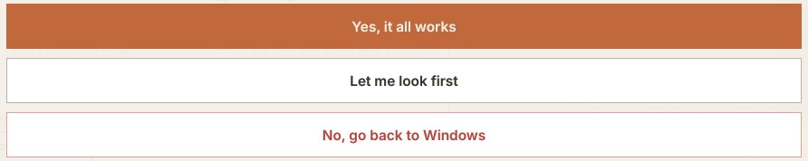

AurOS
Your computer, new again.
A free, simple system for the Windows computer you already have. Windows and all your files stay, and you can go back whenever you like.
Free. For Windows 10 and 11.
AurOS needs Windows 10 or 11, and this computer may have an older Windows. Setup checks first and will tell you.
Open this page on the Windows computer you want to change.
AurOS can’t go on this computer.
You’re on a phone or tablet, and AurOS goes on a Windows computer. Send yourself the link:
This is a Mac, and AurOS goes on a Windows computer. Send yourself the link:
This is a Chromebook, and AurOS goes on a Windows computer. Send yourself the link:
This computer isn’t running Windows, and AurOS goes on a Windows computer. Send yourself the link:
It has a different kind of chip inside (called ARM, as in Snapdragon laptops), and AurOS only works on the usual kind. Have another Windows computer? Send yourself the link:
It has the older, 32-bit kind of Windows, and AurOS needs the 64-bit kind. Have another Windows computer? Send yourself the link:
Or write down the address: @AUROS_ADDRESS@
Do this on the Windows computer you want to change. See every step first

How to install
Three steps. Every one shown.
Your browser and Windows will each ask if you’re sure. That’s normal for a free program. The pictures show exactly what to press: look for the numbered circles.
-
Step 1: Download it
Press Get AurOS. Your computer saves a file called AurOS-Setup.exe.
Your browser will probably say the file isn’t commonly downloaded. That’s normal: browsers say it about every program they haven’t seen many times. Here is how to keep it.
Then open it: press Open file under its name, or double-click AurOS-Setup.exe in your Downloads folder.
In Microsoft Edge
Downloads
AurOS-Setup.exe isn’t commonly downloaded. Make sure you trust AurOS-Setup.exe before you open it.Delete1…Make sure you trust AurOS-Setup.exe before you open it
Microsoft Defender SmartScreen couldn’t verify if this file is safe because it isn’t commonly downloaded.
Publisher: Unknown
Delete3Show more ⌄In Google Chrome
Recent downloads
AurOS-Setup.exe
Suspicious download blocked1›This file isn’t commonly downloaded and it may be dangerous.
Delete2Download suspicious fileIn Firefox
If it says the file is not commonly downloaded: open the list of downloads (the arrow at the top right), press the file, then press Allow download.
-
Step 2: Say yes to Windows
Windows will probably show a blue box: Windows protected your PC. That’s normal too. Press More info, then Run anyway.
Then Windows asks whether AurOS may make changes. Press Yes.
Windows protected your PC
Microsoft Defender SmartScreen prevented an unrecognized app from starting. Running this app might put your PC at risk.
1More info
Don’t runWindows protected your PC
App: AurOS-Setup.exe
Publisher: Unknown publisher2Run anywayDon’t runUser Account Control
Do you want to allow this app from an unknown publisher to make changes to your device?
Do you want to allow this app to make changes to your device?
AurOS-Setup.exe
Publisher: UnknownAurOS Setup
Verified publisher: AurOS3YesNoWindows says “Smart App Control blocked an app”?
Some newer Windows 11 computers have a setting called Smart App Control. It blocks programs Windows hasn’t seen many times, and it has no Run anyway button. Nothing has been changed on your computer. Close the message, then switch that setting off:
Smart App Control blocked an app that may be unsafe
AurOS-Setup.exe
- Press Start, type Windows Security, and open it.
- Press App & browser control.
- Press Smart App Control settings.
- Choose Off. If Windows asks you to confirm, press Yes.
- Open AurOS-Setup.exe again from your Downloads folder, and carry on from More info above.
Windows Security
Virus & threat protection
Firewall & network protection
2App & browser control
3Smart App Control settings
Smart App Control
○ On
○ Evaluation
4◉ Off
Good to know: you can switch Smart App Control back on later, on the same page, though on some computers a recent Windows update stops that from working. Windows’ other protection, Microsoft Defender, keeps working either way.
-
Step 3: Pick a look, press Install AurOS
AurOS Setup checks your computer first. If anything would stop AurOS working, it tells you in plain words before it changes anything.
Pick the look you like, then press Install AurOS. The computer restarts once, by itself. Leave it switched on.
When AurOS starts, it asks whether everything works. Until you answer, AurOS starts each time you switch on, and Windows and your files are kept just as they were. If AurOS fails to start, the computer starts Windows instead. No, go back to Windows brings Windows back.
 1
2
1
2
Press the look you like, then Next.  3
3
Then Install AurOS. 
4After the restart, have a look around. Then press Yes, it all works, or Let me look first to decide later.
Four looks
Pick the one that feels like home.
You choose while AurOS installs, and you can change it any time in Settings, under How this computer works.

Like Windows
A bar along the bottom, just like now.

Like a Mac
Your programs in a row along the bottom.
Big and simple
Big buttons. Nothing ever gets hidden.

One thing at a time
Each program fills the whole screen.
Every look has Get more programs, with many more programs, free.
Good to know.
The small print, in plain words.
- How long it takes
- About 10 to 25 minutes on a newer computer with fast internet; 30 to 60 minutes on an older one with a spinning hard disk. Setup works out the time for your computer before you start.
- Which computers
- A Windows 10 or Windows 11 computer made since about 2013. Not Macs, Chromebooks, phones or tablets.
- Room it needs
- AurOS needs at least 28 GB of empty space, and uses up to 40 GB. Windows keeps 20 GB or more free when there’s room, and never less than 8 GB. Setup shows you both numbers first.
- Keep it plugged in
- Plug in the charger before you start, and leave it in until AurOS has started. Setup waits for it.
- Locked drives
- If Windows has locked its drive with BitLocker (many newer laptops do this by themselves), AurOS can’t go on that computer yet. Setup tells you before it changes anything.
- If AurOS can’t go on your computer
- Setup says so in plain words before it changes anything, and your computer stays exactly as it was.
- Why Windows warns you
- AurOS doesn’t pay Microsoft’s partners to vouch for it, so Windows and your browser don’t know it yet. They say the same about most free programs.
- AurOS is new
- Every version is installed on a test computer before it reaches you. As with any big change, keep a copy of the photos you treasure somewhere else too, such as a memory stick.
Questions.
Is it free?
Yes. No adverts and no subscription. AurOS is made in the open, so anyone can check how it works.
Will I lose my files?
No. AurOS goes into empty space on your computer, and your files stay in Windows, untouched.
Can I go back to Windows?
Yes. Until you tell AurOS that everything works, Windows and your files are kept just as they were, and No, go back to Windows brings Windows back. Later, Put Windows back in AurOS’s Settings makes the computer start Windows again, as it was.
What about my programs, like Microsoft Office?
Programs made for Windows don’t run in AurOS. AurOS comes with its own for letters, email, photos and the internet, and Get more programs has many more, free. You can use Microsoft Office in the internet browser, at office.com.
Is it safe?
AurOS checks your computer before it changes anything, and keeps Windows and your files. Windows and your browser warn you about it for the same reason they warn about most free programs: they haven’t seen it many times.
What if I get stuck?
Print the one-page guide and keep it by the computer. If Setup says AurOS can’t go on your computer, the page for someone who knows computers explains why. You can also ask us on the AurOS project page.
AurOS will never phone you, and nobody from AurOS will ever ask to connect to your computer, or ask for money, a card number or gift cards. Anyone who does is not from AurOS.
Ready when you are.
Free. Windows and all your files stay.
Get AurOSAurOS goes on a Windows computer. Send yourself the link and open it there.